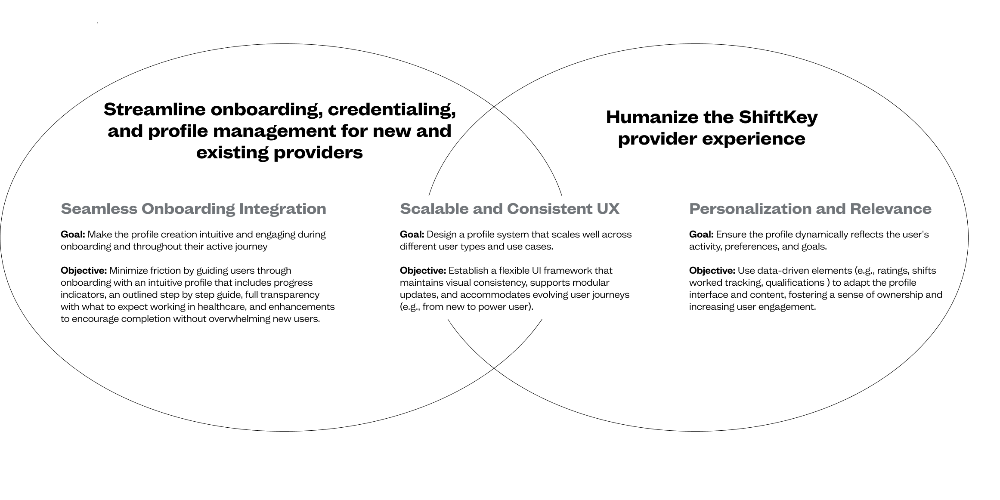
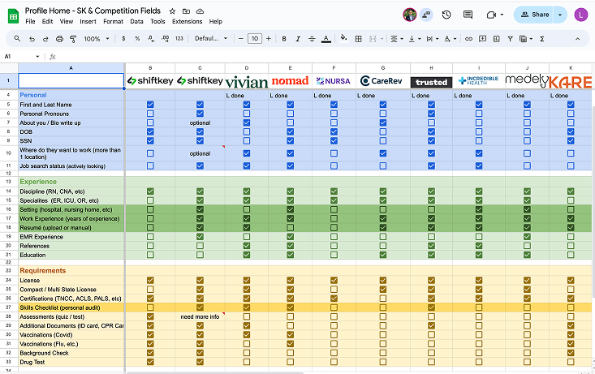
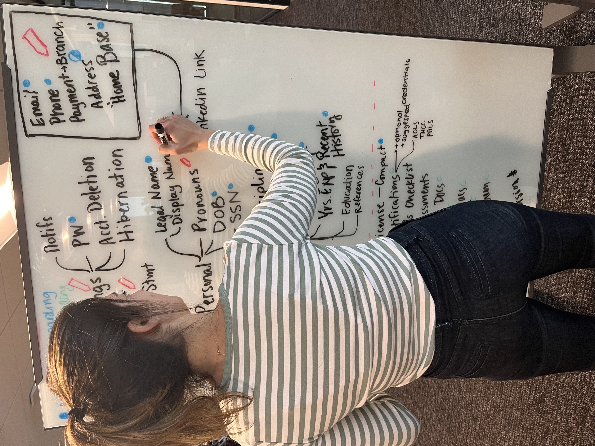
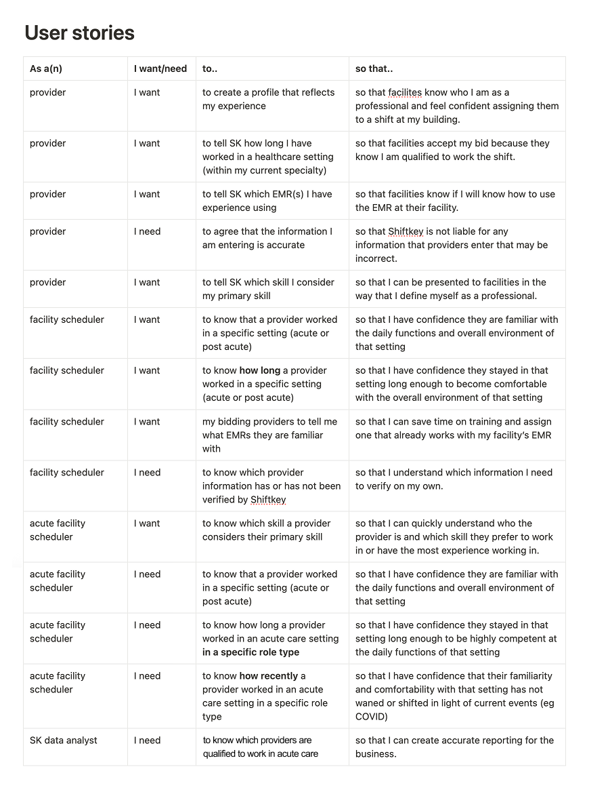
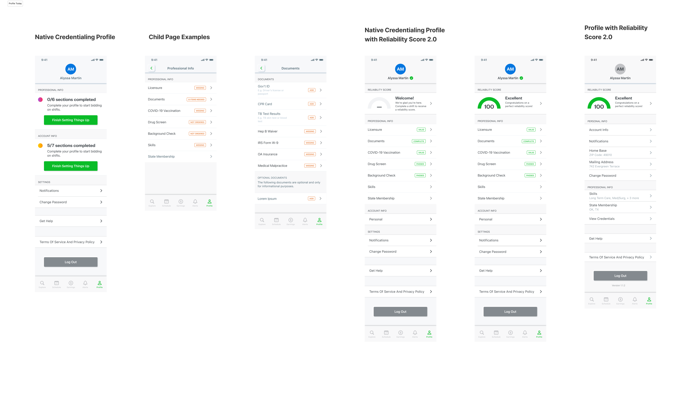
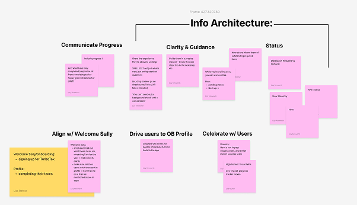
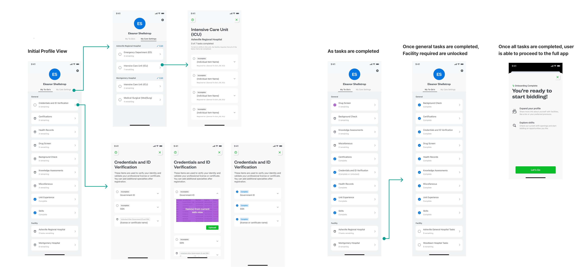

Re-envisioning the user's profile.
When ShiftKey expanded into Acute Care, the existing profile couldn't carry the weight. We rebuilt the surface from scratch and split it into two: one for users in onboarding, one for users actively working shifts.

Context
The profile couldn't keep up with the platform.
ShiftKey is a marketplace that connects healthcare facilities with licensed professionals to fill open shifts on demand. As the company moved into the Acute Care space, the existing profile was the bottleneck. It was outdated, lacked scalability for a new sector of healthcare workers, and didn't reflect the kind of trust an acute care facility needs to see before staffing a shift.
On top of that, onboarding conversion rates were dropping. New users were landing inside the same profile experience as fully active users, which meant they were being asked to wade through a surface designed for someone who already knew the platform.
The profile is the surface where users represent themselves to facilities. If we treated it as a strategic surface (not a settings page), we could rebuild trust on the user side and unlock the next stage of growth on the business side.
Design goals & objectives
As the project evolved, we established a small set of goals that acted as the north star for every design decision, across Acute and Post Acute care, across Onboarding and Active users.

Constraints
Design lead, end to end.
I led design across the Onboarding and Credentialing space, partnering with Product, Engineering, and credentialing subject matter experts. The constraints shaped the work:
- Compliance. Healthcare credentialing has legal teeth. Every field has a downstream effect on whether a worker can legally take a shift.
- Two audiences, one product. A user in onboarding has different needs than a user already working shifts, but they live inside the same profile object.
- Conversion sensitivity. Onboarding is the leakiest part of any marketplace. We had to add scope without adding drop-off.
research
Audit, then study the field.
We started with an extensive product audit of our own profile, paired with secondary research across direct and indirect competitors. The goal: a clear-eyed view of the gaps and the opportunities, before any pixels.
Competitor research
Built a database of what competitors house in their profiles. Looked closely at what felt trustworthy, what felt efficient, what felt like a chore. Identifying patterns that other marketplaces had earned through repeat exposure was as valuable as identifying our own gaps.

Architecture audit and user stories
Mapped what our profile currently houses against what it needed to house. Then sorted every field into three buckets: captured at account creation, captured during onboarding, or captured later as the user becomes active. That sequencing decision was the spine of everything that came after.



Inspiration
Pulled from profiles outside our category that made users want to keep going. The brief: study experiences that feel whole, not transactional. Profiles where each completed step makes the next one feel earned.

& tradeoffs
Two profiles. One platform.
The profile today
Before deciding what to change, we mapped exactly how the existing profile falls short of business and industry standards. Where users got stuck, where data went missing, where the surface stopped earning trust.

Introducing two types of profile
Our first task was identifying how the two profiles would be different and how they would eventually collide. The architecture had to support both states inside a single underlying data model.

Decision 01, split the surface
The biggest call of the project: the profile shouldn't be one thing. We introduced two profile states, an Onboarding Profile for users still becoming active, and an Active Profile for users already working shifts. Same underlying data model, different visible surface depending on where a user is in their journey.
Decision 02, strip nav during onboarding
The Onboarding Profile removes the platform's full navigation, on purpose. New users are focused on one job, completing the requirements that make them eligible to work. Anything else is noise at that stage.
Decision 03, sequence by SMEs, not by data model
The order in which onboarding tasks appear is driven by ShiftKey's credentialing subject matter experts, not by what's easiest to engineer. Completing one task unlocks the next, mirroring the actual gating logic of healthcare credentialing.

Two surfaces. Both load-bearing.
The Onboarding Profile
A focused surface that walks new users step-by-step through every requirement to become an active provider. Full transparency into what's needed, no platform navigation to distract from the task at hand. Each completed item unlocks the next, in an order set by credentialing SMEs.

The Active Profile
For users already working shifts, the Active Profile is a cohesive surface that personalizes their experience, ensures their eligibility is current, and gives facilities a real glimpse of who they're staffing. Completion isn't a hurdle here, it's the thing that unlocks more shifts and better matches.

Motion and interaction
Short walkthrough of how the profile responds to user actions in the wild.
outcomes
Wins on both sides of the experience.
The redesign delivered measurable change on the surfaces that mattered most: users moved through onboarding faster, completed it more often, and felt better about what they were doing while they did it.
Beyond those direct measures, the work was the foundation for ShiftKey's broader push into Acute Care, the kind of follow-on impact that doesn't show up in a single conversion metric but compounds across quarters and segments.
What I'd do again.
The single biggest call was splitting the profile into two states. It came out of a design instinct early in the project, but it took a real partnership with the product team to ship. I'm grateful they saw the vision when I pitched it, because in hindsight it's the move that made everything else possible.
I'd also keep the same approach to sequencing. Letting credentialing SMEs drive task order (instead of an internal preference for what was easiest to build) made the experience match how healthcare credentialing actually works, which is the only way trust gets earned with users in this space.
What I'd push harder on next time, getting analytics design in on day one. By the time we had post-launch data, I wanted finer-grained event tracking than we'd planned for. A small upfront investment there would have made the post-mortem sharper.